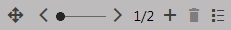

Personalizing editor widgets
Once content personalization is enabled, you can create variants of page components through the Pages application. Variants of page components can be displayed to visitors based on various conditions. For example, you can use different component variants to display different content to different personas.
If you are a content editor without access to the Design tab, you can leverage content personalization on pages with editor widget zones. You can create different variants of widgets, each with different property settings and content on the Page tab.
Personalizing widgets under workflow
Personalization variants of editor widgets are NOT included within the scope of workflow. Changes made to widget variants can have an immediate effect on the live website and are not recorded in the page version history.
For administrators: To strictly enforce the workflow publishing process, you need to prevent editors from creating widget variants – define editor roles without the Manage permission for the Content personalization module.
Multivariate testing and Content personalization
It is not possible to create personalization variants of widgets that already have Multivariate testing variants.
Adding personalization variants for editor widgets
To add personalization variants for editor widgets:
In the Pages application, edit the page containing the widget zone on the Page tab.
Hover over the widget and click Add content personalization variant (
 ) in the top right pop-up menu.
) in the top right pop-up menu.Fill in the display condition and other settings of the personalization variant.
(Personas) Use the Contact is in persona macro rule in the macro Rule designer.
Click Save & Close.
The widget configuration dialog opens – the variant is simply another instance of the original widget.
By default, the variant has the same values in its properties as are set for the original, but you can change them as required.
Click Save & Close once you have configured the widget variant's properties as required.
(Optional) Preview the different widget variants using the personalization slider in the header of the widget.
While still on the Page tab, click Save to confirm the changes.
When you create a variant for a widget, a slider becomes available in the pop-up menu. You can use the slider to switch between the widget's variants.

Switching between widget variants
The personalization menu offers the following buttons:
Add content personalization variant – creates a new variant for the given widget.
Remove variant – removes the variant currently selected on the slider (not available for the original widget).
Variant list – opens a dialog showing a list of all variants defined for the widget. You can also manage the variants.
To edit the properties of the widget variant currently selected in the slider, hover over the widget to expand its menu and click Configure. The configuration dialog has an additional Variant properties tab, where you can modify the settings of the personalization variant.
Removing a widget immediately deletes all of its variants, even if you do not save the page content.
Using the Reset widgets action provided by a Widget actions web part, you can remove all widget variants from the page.If you Copy an editor widget with variants, the system only transfers the original widget (without variants).
The system categorizes editor widgets as page content, so widget variants are bound to specific pages (they are not included in the page template).
Users with the Design website permission for the Design module can also create personalization variants for web parts and web part zones on a page's Design tab. See Personalizing web parts and web part zones for more information.
Kentico EMS required
Features described on this page require the Kentico EMS license.
Previewing personalization variants
You can use the sliders of personalized widgets to switch between individual variants (including the original). The page displays the content of the currently selected variants in the Pages application on the page's Page tab and in the Preview mode.
The system only resolves the display conditions of personalization variants on the actual live site. This allows you to check how the page looks with different active variants, without having to fulfill the required conditions. Simply set the sliders to the appropriate variants.
Overviews of personalization variants
To access a list of all content personalization variants defined on a given page:
Select the page in the content tree of the Pages application.
Open the page's Properties -> Variants tab.
The list includes the variants of all three components types.
Reference - Personalization variant properties
The following properties are available when creating or configuring personalization variants:
|
Property |
Description |
|
Display name |
The name displayed in lists of content personalization variants in the administration interface. |
|
Description |
To make the variant easier to use and maintain, you can add an explanation about the scenario for which the variant is intended, describe the differences from the original component, etc. |
|
Enabled |
Indicates if the variant is considered as a possible content option. When evaluating the variant conditions of a personalized component, the system skips disabled variants (even if the requirements set by the condition are fulfilled). |
|
Display condition |
Enter the condition that must be fulfilled for the page to display the variant. |